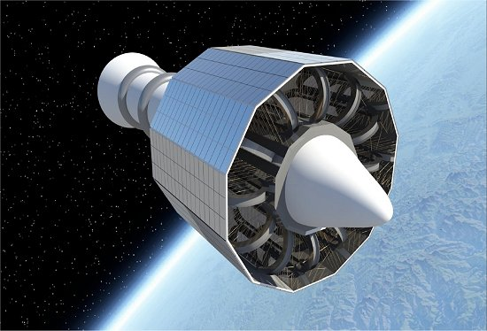

Materiais resistentes à radiação espacial
avariado
Este experimento visa estudar e desenvolver materiais resistentes
à radiação espacial. A pesquisa será conduzida na Estação Espacial
Internacional (ISS) e focará na avaliação de novos compostos que
possam oferecer proteção contra a ampla gama de radiações
encontradas no espaço. O objetivo é identificar materiais que
possam ser utilizados em espaçonaves, trajes espaciais e habitats
extraterrestres, garantindo a segurança e saúde dos astronautas.
Descrição
Passo a passo para o reparo
Avaliar o dano ao experimento e determinar o que foi afetado;
Identificar as peças que precisam ser reparadas ou
substituídas;
Remover as peças danificadas com cuidado para não prejudicar
ainda mais o experimento;